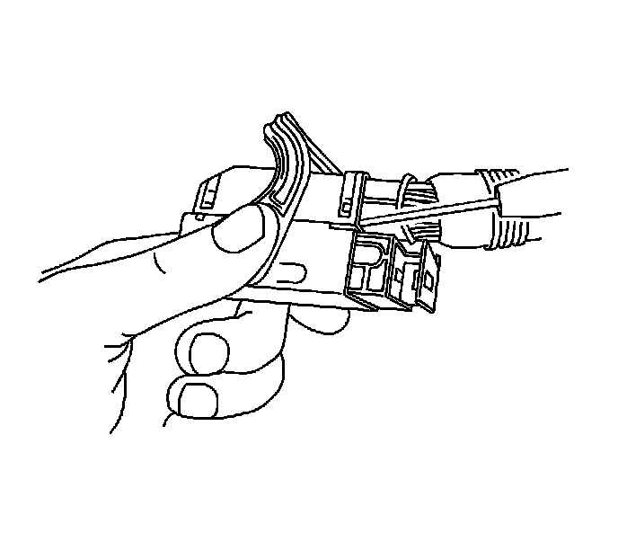
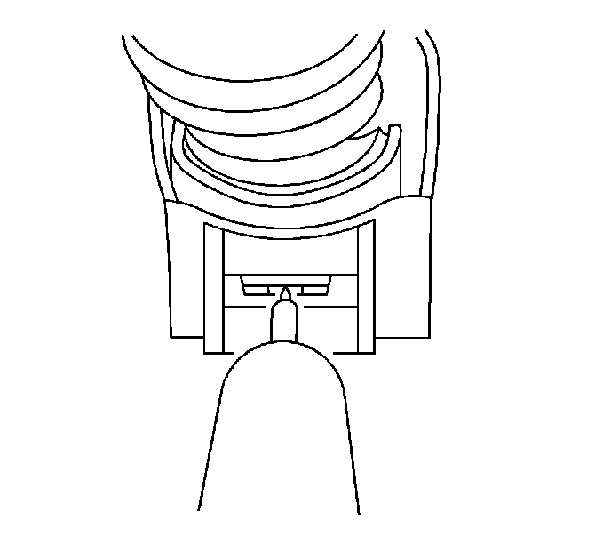
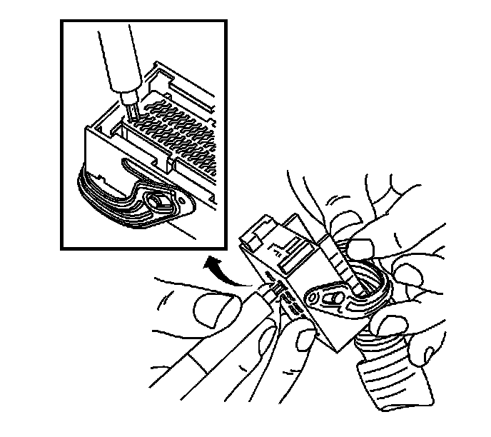
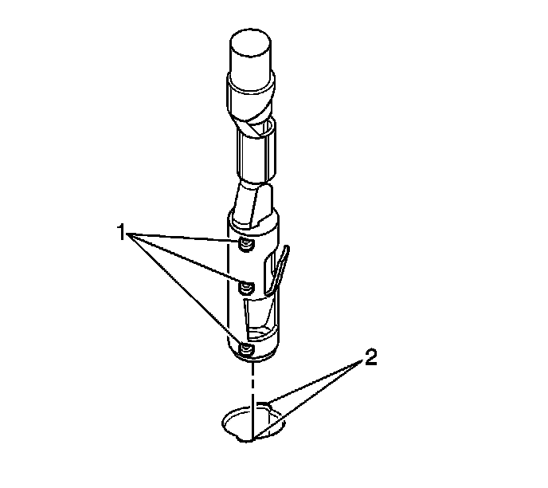

Bosch Connectors (0.64)
Bosch Connectors (0.64)
Tools Required
J-38125 Terminal Repair Kit
Terminal Removal Procedure
1. Locate the lever lock on the wire dress cover. While pressing the lock, pull the lever over and past the lock until the lever is at the end of its travel.
2. Disconnect the connector from the component.
3. Pull the rubber boot that covers the wires back to expose the end of the connector dress cover.
4. Place the connector locking lever in the center of the connector.

5. Locate the 2 dress cover locking tabs that are on the wire end of the connector. Insert a small flat-bladed tool between the cover and connector body and pry up.

6. Locate the 2 dress cover locking tabs located on the opposite side of the connector. Insert a small flat-bladed tool between the cover at the connector end and pry up.
7. Remove the dress cover.
8. Cut the tie wrap on the wire bundle.

9. Remove the terminal position assurance (TPA) by inserting a small flat-bladed tool into the small slot in the end of the slider and pushing on the TPA until it comes out of the connector. When the TPA exits the opposite side of the connector, gasp the TPA and pull it completely out of the connector.
10. Push the wire side of the terminal that is being removed toward the connector and hold it in position.

11. Insert the J 38125-560 (GM P/N 15314260) into the 2 triangular cavities on each side of the terminal at the front of the connector. See the release tool cross reference in the Reference Guide of the J-38125 to ensure that the correct release tool is used.
12. Carefully pull the terminal out of the connector. Always remember never use force when pulling a terminal out of a connector. If the terminal is difficult to remove, repeat the entire procedure.
Terminal Repair Procedure
Use the appropriate terminal and follow the instructions in the J-38125 .
Terminal Replacement Procedure

1. Prior to installation the terminal must be aligned so the (1) coding lugs align with the (2) coding grooves on the connector.
2. Once the terminal is aligned, slide the terminal into the cavity until the retainer has engaged in the cavity of the connector.
3. Slide the TPA in the connector body and seat it using a small flat bladed tool. The TPA is seated when it is flush with the contact housing.
4. Secure the wires to the connector body using a tie wrap and replace the dress cover and grommet.